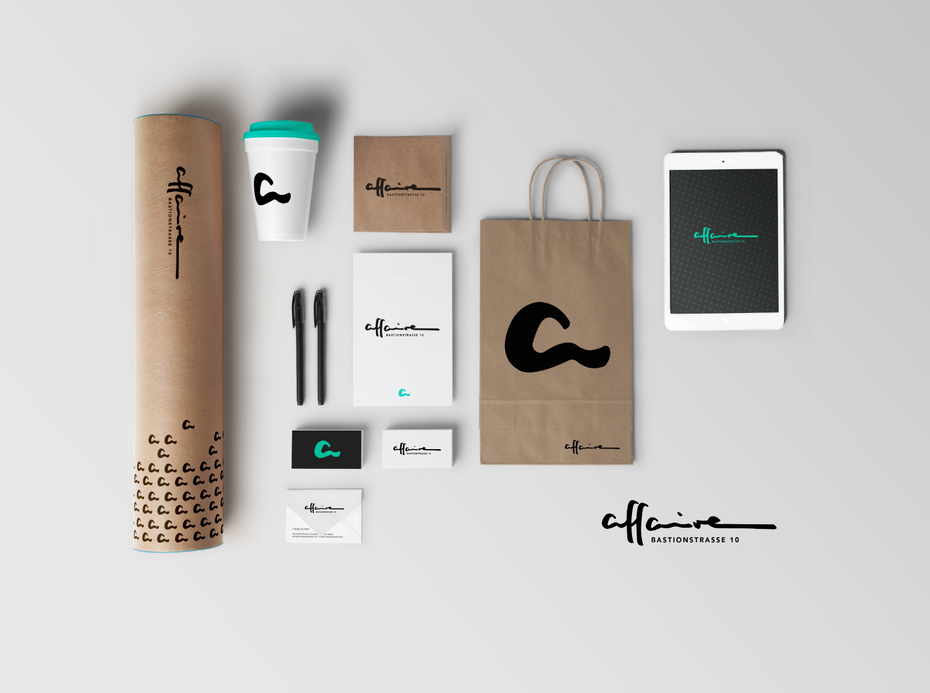

Graphic design uses visual compositions to solve problems and communicate ideas through typography, imagery, color and form. There’s no one way to do that, and that’s why there are several types of graphic design with their own area of specialization.
平面設計是利用不同視覺元素組合而成，然而因為定義以及用途太廣，因此，平面設計細分許多不同的種類。
Visual identity graphic design
形象視覺設計
A brand identity is how the organization communicates its personality, tone and essence, as well as memories, emotions and experiences. Visual identity graphic design is exactly that: the visual elements of brand identity that act as the face of a brand to communicate those intangible qualities through images, shapes and color.
品牌形象是在企業宣傳過程中整合其背後的故事以及設定，為了達到這目的，企業需要形象視覺設計，利用圖像和色彩傳達無形的價值。
Visual identity design is one of the most common types of design. Visual identity graphic designers must possess a general knowledge of all types of graphic design in order to create design elements that are suitable across all visual media. They also need excellent communication, conceptual and creative skills, and a passion for researching industries, organizations, trends and competitors.
這是個生活中最容易接觸的平面設計，然而，成為一位形象視覺設計師，除了需要累積許多經驗，並學得知識和技巧，更需要具有傑出的構通能力和對於業界和潮流的掌握力。

Marketing & advertising graphic design
廣告行銷設計
Marketing designers work with company owners, directors, managers or marketing professionals to create assets for marketing strategies. Designers can specialize in a specific type of media or create a broad assortment of collateral for print, digital, and so on.
此設計種類多半與企業合作，共同為了創造利益而計劃行銷策略。廣告行銷設計師可以針對某特定媒體形式去設計，或是傳統型的印刷和數位模式等等。
Compared to traditionally print-centered, this type of design has become more like digital assets, especially for use in content marketing and digital advertising, such as vehicle wraps or magazine ads.
相較於傳統印刷形式，此類的視覺設計更加地多元化，並多半著重於多媒體上，像是汽車或雜誌廣告。

User interface graphic design
用戶介面設計
A user interface (UI) is how a user interacts with a device or application. UI design is the process of designing interfaces to make them easy to use and provide a user-friendly experience.
所謂的用戶界面，是使用裝置或應用程式上出現的介面，因此，此平面設計是為了讓用戶容易使用並且提供優質的體驗。
In the context of graphic design, UI design focuses on the user’s visual experience and the design of on-screen graphic elements like buttons, menus, micro-interactions, and more. It’s a UI designer’s job to balance aesthetic appeal with technical functionality.
用戶介面設計著重於其用戶的視覺體驗以及屏幕上各種圖形元素的設計（像是按鈕，菜單，互動等），換句話說，介面設計師的工作就是在美學和功能之間取得完美的平衡。
Publication graphic design
刊物平面設計
Publications are long-form pieces that communicate with an audience through public distribution. They have traditionally been a print medium.
我們常說的刊物多半是指長篇文章，傳統上屬於印刷物，可公開發行並與讀者交流。
Publication design is a classic type of design—think books, newspapers, magazines and catalogs. However, there’s recently been a significant rise in digital publishing.
然而刊物平面設計不外乎就是專門設計書籍，報紙，雜誌或者目錄，同時因為科技發展，愈來愈多電子刊物的出現，新型態的刊物平面設計也出現了。
Motion Grphic Design
動畫視覺設計
Motion graphic design has become a real trend today, there are plenty of companies using animation to display their products and services. Except for marketing purposes, animations are used in video games, applications, banners, animated texts, and subtitles and much more. “Motion graphics” is a brand new areas and opportunities for designers.
動畫視覺設計是現在的一個新潮流，很多企業為了宣傳效果，不論是在手遊，軟體，海報，或是單純文字上，都會利用動畫吸引觀眾的注意，因此，現今動畫方面的快速發展，為視覺設計這條路，創造了無限機會和創新。
On the other hand, we can see a lot of application of the 3D graphic design, because it is gaining a lot of importance these days. It has become the most popular effects used in almost all industries. 3D graphic designers need to have a incredible computer and technical skills. .
另外，在許多不同產業，我們可以常看到3D視覺與設計的結合，應用的範圍可以無限地嘗試，成為指日可待的新設計趨勢，同時也提供設計師不同的跑道，兼具程式設計專長的設計師經常會選擇朝這方面發展。
Packaging graphic design
包裝平面設計
Packaging designers create concepts, develop mockups and create the print-ready files for a product. This requires expert knowledge of print processes and a keen understanding of industrial design and manufacturing.
包裝設計主要是創建產品概念，開發模型並製造其可打印的相關設計文件，不僅需要印刷過程的專業知識，更需要對於工業設計和製造的充分理解及應用。
Because packaging design touches so many disciplines, it’s not uncommon for designers to find themselves creating other assets for a product such as photography, illustrations and visual identity.
由於包裝設計涉及許多學科，因此設計師很常為產品創建其他額外資產（例如：攝影，插畫和視覺形象）。
Environmental graphic design
環境視覺設計
Environmental graphic design is a multidisciplinary design which combines graphic, architectural, interior, landscape, and industrial design. Designers collaborate with people in different fields in order to plan and implement their designs. They must be familiar with industrial design concepts and able to read and sketch architectural plans
環境圖形設計是一種多概念結合的設計，包含視覺設計，建築，室內，景觀以及工業設計，所以為了計劃和成功實施設計作品，設計師們常要與不同領域的人合作，同時，必須熟悉工業設計理念，並能夠理解和繪製建築設計圖。
Environmental graphic design visually connects people to places to improve their overall experience by making spaces more memorable, interesting, informative or easier to navigate.
環境視覺設計是以視覺方式，將人們連接到空間，從而改善整體體驗以及動線，使其產生更多樂趣和記憶點。